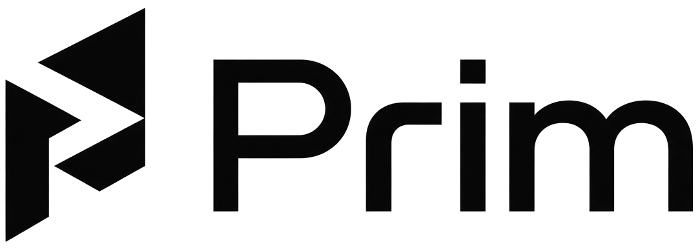
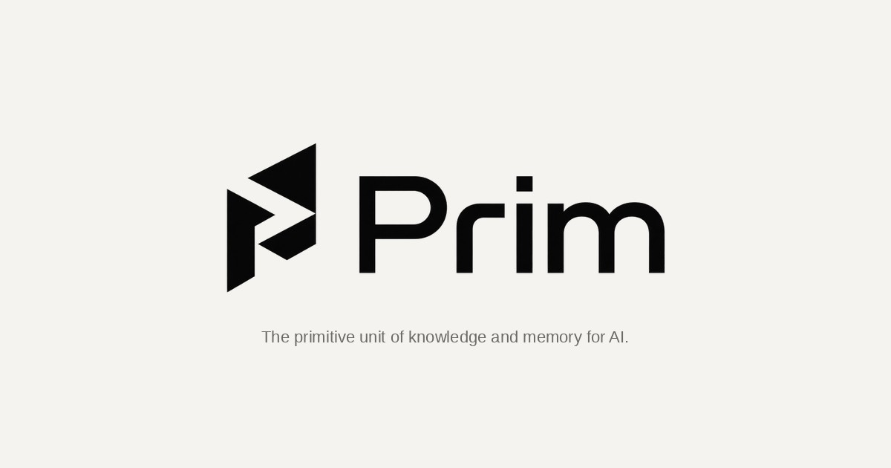
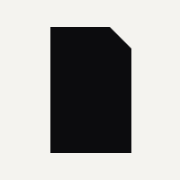

Time capsules
The work survives the person, the session, and the vendor. Open it in ten years. It’s still the Prim.
A file that stores information, and tools that interact with it.
The primitive unit of knowledge and memory for AI.
Paper is the live web default. Gold is the only accent. Never the retired Eidos blue.
Instrument Sans
Display 500. Body 400. Precise, calm. No hype.
IBM Plex Mono — send me the prim.
If it needs a long explanation, it has not landed yet. From prims.sh, not rewritten.
Also used: PDFs are the feather. Prims are the press.
The work survives the person, the session, and the vendor. Open it in ten years. It’s still the Prim.
One file. Desk to desk, agent to agent, counsel to the board. You send the prim — not a zip of conflicting sheets.
The knowledge is the firm’s. Not trapped in someone’s laptop, a chat log, or a tool that walks out the door.
No scraping a deck. No guessing which tab is the source of truth. The file is native.
Claims carry evidence, hashes, and provenance. Validation is fail-closed.
A session is a Prim. The next agent picks up the same file.
| Term | Kind | Use | Don’t |
|---|---|---|---|
| Prim | category / file | Singular pack. The file. | Not “a Prims.” |
| Prims | product family | Tools around the file. | Not the singular file noun. |
| Prims Desktop | app | prims.sh/desktop | Never desktop.prims.sh. |
| Eidos AGI | company | packs/eidos | No tridot on Prim. |
| Viewer | surface | One of three Desktop doors. | Not a connector. |
| Connectors | Desktop door | Talks to a system. | Don’t hide a viewer here. |
| Chat | Desktop door | ACP under the hood. | Harness stays out of chrome. |
| Applet | composition | A bench you open. | Don’t mint prim.applet. |
| Process | house procedure | Written down, it is a prim. | Not required on every file. |
| Prim Secrets | provisional | Exploratory applet. Knox under the hood. | Not a CHARTER lock. |
| Prim Approvals | provisional | Exploratory applet. Hancock under the hood. | Not a CHARTER lock. |
| Drive sync | provisional | Lean on Desktop. Drive is the product. | Not Google Drive sync for Desktop. |
Live nav from prims.sh/site-nav.js. One-line jobs from the pages themselves.
Category
The primitive unit of knowledge and memory for AI.
App
Personal Mac memory pack. Agents only see what you admit.
Drive
Multi-org cloud drive for teams and agents. Packs live on the plane.
Applets · exploratory
Compositions agents hit: a password or an approval. Not a third line.
Viewer
Living viewer. The pack is authority.
Surface
A host frame. The pack stays the file. Not a Desktop connector.
Category
File, tool, applet, process. Cite, don’t pour.
Profile
A process written down clearly enough to run.
Spec
The spec as a prim. This page is the vessel.
Demo
Click through kinds. Each file becomes an editor.
Registry
Types, tools, applets. Live API is registry.prims.sh.
UTI com.eidosagi.prim app id sh.prims.desktop team Y6CQ4SWPWM /Applications/Prims Desktop.app



Full-bleed square. Same spine + folded page as folio.svg. Do not pre-round. Do not put the wordmark or the Eidos tridot on the icon.
prims.sh · desktop
Your personal Mac memory pack. Agents only see what you admit. The pack stays the truth.
13Gutenberg Bible, c. 1455
The 42-line Bible printed at Mainz, commonly dated 1454–55. Conventional marker for European movable-type printing at scale.
14Scribe vs press output
A skilled scribe is commonly estimated at on the order of one Bible per year. A press could pull thousands of sheets in a day. Elizabeth L. Eisenstein, The Printing Press as an Agent of Change (1979).